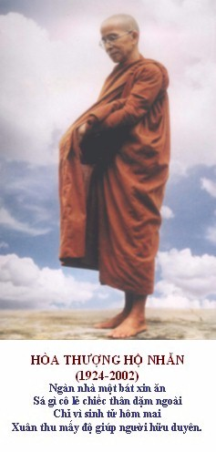
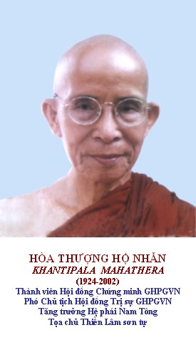

BuddhaSasana
Home Page
This document is written in Vietnamese, with Unicode
Times font
Thành viên Hội đồng Chứng minh
GHPGVN
Phó Chủ tịch Hội đồng Trị sự GHPGVN
Tăng trưởng Hệ phái Nam Tông
Tọa chủ Thiền Lâm sơn tự, Huế
|
Trưởng Lão Hòa Thượng thế danh Tôn Thất Thuế, sinh năm 1924 tại thôn Thanh Lương, xã Hương Xuân, huyện Hương Trà, tỉnh Thừa Thiên Huế. Ngài thuộc dòng dõi hoàng gia Đệ cửu hệ, Tứ phòng. Phụ thân là Cụ ông Tôn Thất Tích, pháp danh Nguyên Phước, mẫu thân là Cụ bà Phan Thị Cưỡng, pháp danh Nguyên Thâm, đều là những nông dân hiền lương, chất phác. Ngài có tất cả năm anh chị em, hai trai, ba gái. Hiện tại, một gái đã mất, còn Ngài và hai em gái đều theo Phật xuất gia. Hai thân Ngài đều đã khuất núi. I. Thuở ấu thời Ngài có thể chất văn nhược, mảnh dẻ nhưng có ý chí, nghị lực phi thường; đặc biệt là thông minh, sáng dạ. Năm 1934, lúc 10 tuổi, Ngài đã đỗ bằng Yếu lược. Năm 1937, lúc 13 tuổi Ngài đỗ bằng Primère. Sự học đang thành đạt như vậy nhưng vì gia đình quá nghèo khổ, Ngài đành phải bỏ học để phụ giúp công việc ruộng vườn với cha mẹ. Năm 1939, lúc 15 tuổi, mặc dù còn nhỏ nhưng do tư cách, phẩm chất đứng đắn, Ngài được cụ Tôn Thất Cổn mời làm thư ký cho Tôn Nhân Phủ ở Thành Nội Huế. Công việc của Ngài là trông coi sổ sách giấy tờ cho Thế Miếu. Ba năm làm việc ở đây, Ngài vừa có đồng lương đỡ đần gia đình vừa có thì giờ để nghiên cứu kinh sách. II. Xuất gia tầm đạo Hôm kia, duyên lành dẫn dắt, Ngài đọc được một quyển sách nói về cuộc đời Đức Phật Thích Ca từ Đản Sanh đến Nhập Diệt. Xúc động quá, Ngài tự nghĩ: "Cuộc đời vắn vỏi, sống chết vô thường, ta phải noi gương Đức Phật từ bỏ tất cả để tầm cầu Con Đường Vô Thượng. Đây mới là ước mơ chân chính trên thế gian này mà từ lâu ta hằng mơ hồ dự cảm". Thế rồi, năm 1942, sau khi suy nghĩ chín chắn, Ngài rời Miếu Đường Hoàng gia trở lại quê nhà, khẩn khoản, tha thiết xin cha mẹ xuất gia làm cho hai vị rất ngạc nhiên. Con đường công danh sự nghiệp đang mở rộng, một đời sống hạnh phúc, cơm no áo ấm đầy hứa hẹn ở tương lai, sao đứa con lạ đời này lại chối từ tất cả? Dẫu thương con nhưng cũng không thể chiều theo ý con để chấp nhận ước vọng nghịch đời, cha mẹ Ngài thẳng thừng từ chối. Tuy nhiên, vừa hiếu từ, vừa ôn nhu; Ngài lấy khổ nhục để tỏ bày ý chí kiên định của mình nên cuối cùng, cha mẹ Ngài đành nuốt nước mắt cho Ngài ra đi. Thế là vừa tròn 18 tuổi, người con trai nom vẻ khô gầy nhưng cương nghị ấy đã tự cạo đầu, khoác áo nâu sồng tìm đến chùa Cao Minh trong làng xuất gia tu học. Ở đây, Ngài phải tự mày mò tìm kiếm, tự đọc kinh sách và suy nghĩ pháp môn thích hợp cho mình. Tu khổ hạnh là con đường mà Ngài lựa chọn. Thế rồi, mỗi ngày, Ngài chỉ dùng một nắm rau sống bất kể xanh hay vàng, không có muối cùng với bát nước trong, chẳng dùng thêm bất kỳ một thứ gì khác. Năm 1945, do chiến tranh bom rơi đạn lạc, Ngài cùng với số người thân cận tìm cách tản cư. Trên đường về Huế, gặp chùa Vô Vi, Ngài xin ở lại đây để tu tập. Pháp môn khổ hạnh Ngài vẫn duy trì, đồng thời Ngài vẫn lấy hơi thở làm đề mục thiền định. Thời gian trôi qua, tính đến hôm ấy thì Ngài ăn rau sống, uống nước lã đã ba năm; thân thể Ngài chỉ còn xương và da, cơ thể quá suy nhược, đã chết đi sống lại mấy lần nhưng Ngài vẫn kiên định, không thối chí, ngả lòng mặc dầu các thân nhân bên cạnh khóc ngày, khóc đêm. Hôm kia, do quá suy kiệt, máu huyết khô cạn, sự sống chỉ còn thoi thóp, mong manh; từ tư thế tọa thiền, Ngài bất tỉnh, mê lả đi. Trong mơ màng, Ngài thấy có người đến lay gọi rồi nói vào tai với đại ý rằng: "Bồ tát sáu năm khổ hạnh sai lầm, còn Thầy cũng đã hơn ba năm khổ hạnh sai lầm. Khổ hạnh chỉ đưa đến cái chết chứ không thể đưa đến giác ngộ, giải thoát đâu". Tỉnh lại, thấy xung quanh cửa đóng then cài, biết là chư thiên hộ pháp kinh cảm nhắc nhở, Ngài vô cùng tri ân. Bắt đầu từ đây, Ngài ngọ trai bằng hai chén cơm lửng, muối dưa chay đạm với một bát nước trong. Năm 1947, lúc Ngài 23 tuổi, nghe tiếng tu hành của Ôn Châu Lâm; Ngài từ giã chùa Vô Vi tìm đến Ôn để xin thụ giáo. Ở đây được hai năm rưỡi, Ngài được Ôn Châu Lâm tận tình hướng dẫn Kinh, Luật và chữ Hán, sau đó cho thọ Sa di giới. Nhờ khiêm nhu, đức hạnh, tu hành tinh tấn nên Ngài được Thầy thương, bạn mến, gần xa người người kỉnh mộ. III. Thọ Đại Giới và dự Hội nghị kết tập Tam Tạng Vào đầu thập niên 50, Phật giáo Nguyên Thủy đã có mặt ở miền Trung, Ngài được thấy, được gặp Hòa Thượng Giới Nghiêm. Do tăng tướng phẩm mạo và hình ảnh tam y, nhất bát, đầu trần, chân đất của vị sư nguyên thủy mà làm cho Ngài xúc động mạnh. Ngài tự nghĩ: "Đúng rồi! Đây chính là hình ảnh của Đức Phật và Chư Tăng thuở xa xưa nào ở kinh thành Xá Vệ. Con đường này hợp với chí nguyện và sở thích của ta". Thế rồi, từ giã ngôi chùa Châu Lâm thân yêu, Ngài tìm đến Chùa Tam Bảo, Đà Nẵng và được Hòa Thượng Giới Nghiêm hướng dẫn Kinh, Luật Pàli. Năm 1952, Ngài được Hòa Thượng Thiện Luật cho xuất gia Sadi, mang y bát; ngày ngày khất thực, thiền định vô cùng tinh tấn. Cũng trong năm này, Ngài được tháp tùng Hòa Thượng Bửu Chơn đi Miến Điện dự Hội nghị Phật giáo lần thứ 3; sau đó được ở lại để dự Đại Hội kết tập Tam Tạng Thánh Điển Pàli lần thứ 6 tại Rangoon. Vào ngày 29-12-1955, Ngài được duyên lành tối thắng thọ Cụ Túc Giới tại thạch động Pirimangalà; Thầy Tế độ là Đại Hòa Thượng Thánh Tăng Pokokku Sayadaw; đương nhiệm Pháp Chủ chứng minh tối cao Đại Hội kết tập Thánh Điển Tam Tạng. Cũng là kỳ duyên hy hữu nữa, hai bậc cao đức tôn giả vấn đáp trong Đại hội kết tập Tam Tạng là Pháp Sư Nandàvamsa tinh thông Tam Tạng Pháp Học; và Thiền Sư Mahàsì Sayadaw, tinh thông Pháp Hành - là hai vị thầy Yết-ma và Giáo Thọ A-xà-lê của Ngài. Tăng Hội chứng minh hôm đó gồm 300 vị cao Tăng của thế giới. Ngoài ra, trong thời gian này, Ngài còn được học Thiền Vipassanà với Thiền Sư Mahàsì Sayadaw nổi danh đương đại. Sau Đại Hội kết tập Tam Tạng, Ngài thỉnh được Xá lợi Phật, Xá lợi Chư Thánh Tăng và Tam Tạng Pàli Miến về nước. Hiện nay, Xá lợi Phật, Xá lợi Chư Thánh Tăng được tôn thờ ở Thiền Lâm Thánh Tháp và Tam Tạng Pàli Miến còn bảo lưu ở Chùa Tam Bảo - Đà Nẵng. IV. Sự nghiệp hoằng pháp Năm 1958, vì nhu cầu của Giáo Hội Tăng già Nguyên thủy Việt Nam, Ngài rời Tam Bảo tự về trụ trì Chùa Tăng Quang, Gia Hội, Huế; và vẫn giữ hạnh trì bát đầu đà, tùy duyên hóa độ chúng sanh. Năm 1960, Ngài xin phép Giáo Hội rời Tăng Quang lên thôn Thượng II, xã Thủy Xuân dựng cốc lá giữa tha ma mộ địa vắng người để tu hành. Và chính ở đây, hạnh độc cư thiền định và trì bát đầu đà của Ngài đã xúc động tín tâm và lòng kỉnh mộ của nhiều người. Năm 1966, Thiền Lâm Thánh Tháp được hình thành và lần hồi, nhờ phước đức thanh tịnh của Ngài, qua vài đợt tu sửa, ngôi chùa mới có tầm vóc như hiện nay. Tháng 11/1997, Ngài được cung cử vào Thành viên Hội đồng Chứng Minh GHPGVN và Phó Chủ Tịch Hội đồng Trị sự GHPGVN. Năm 1998, Ngài được toàn thể Chư Tăng và Phật Tử PGNT suy tôn lên ngôi vị Tăng Trưởng do đạo hạnh thanh cao, pháp lực nghiêm minh và giới luật tinh khiết của Ngài. Suốt mấy năm trường, vì công việc của Giáo hội, nhu cầu của hệ phái, Ngài ra Bắc, vào Nam dự Đại hội hoặc đi thăm thú các chùa đó đây luôn luôn với nụ cười hoan hỷ. Gặp Chư Tăng hay Phật Tử, bao giờ Ngài cũng sách tấn việc tu hành với lời lẽ giản dị, từ hòa. Và điều đặc biệt nhất, tối thắng và ưu việt nhất là nhờ "thân giáo vô ngôn" từ nơi Ngài mà uy đức của Ngài ngày thêm sáng rỡ. Chư vị Tôn Đức, các bậc chức sắc Giáo Hội và Chính quyền dường như ai cũng cảm mến Ngài. Chư Tăng và Phật tử không kể Nam Bắc Tông, ai ai cũng kỉnh mộ và mến thương Ngài. V. Năm tháng và trước giờ thị tịch Chư Tăng và Phật Tử thân tín, ai cũng biết là năm 2002 Ngài sẽ xả báo thân. Do đức khiêm tốn, Ngài thường nói rằng: "Có sinh ắt có tử. Đức Phật, Niết Bàn năm 80 tuổi - nên Sư muốn ra đi với tuổi thọ sau Đức Phật chút ít." Biết lời nguyện của Ngài nên đầu xuân 2002, một số Phật Tử đứng ra tổ chức lễ mừng thọ Ngài. Dịp này, Chư Tăng và Phật tử đồng quỳ xin Ngài xả bỏ lời nguyện, trụ thế một thời gian nữa để cho chúng đồ có nơi nương tựa. Ngài chẳng gật đầu, chẳng lắc đầu, chỉ mỉm cười nói: "Thôi, thì cứ để tùy duyên". Hỡi ôi! Hóa ra "tùy duyên" là vậy. Hóa ra, tùy duyên là đúng như câu kệ của Ngài Sariputta:
Thế cho nên, gần 80 tuổi, sức khỏe Ngài vẫn tốt, nắng mưa sương tuyết, Ngài vẫn đều đặn khất thực trong xóm làng, hang cùng ngõ hẹp, không bỏ một buổi nào. Ngài ra đi không cảm mạo, không một giờ nằm bệnh, như ngọn đèn, gió thổi qua là tắt. Có lẽ nào lời nguyện xưa của Ngài, Ngài chẳng cần dụng tâm hóa giải làm gì, cứ tùy duyên thôi sao? Vào lúc 8 giờ sáng, ngày 7 tháng 9 năm Nhâm Ngọ (12-10-2002), Ngài thâu thần thị tịch như đi vào giấc ngủ vĩnh hằng, thần sắc an nhiên, tươi tỉnh. Vài phút trước khi đi, Ngài còn tỉnh giác, chánh niệm nghiêng người lại, tay phải gối đầu giống y tư thế Đức Phật Đại Bát Niết Bàn. Ôi! Một ngọn núi vô danh nhưng có một nhân cách tu hành kiệt xuất đến ở thì ngọn núi kia cũng trở nên hữu danh! Một miền rừng cây cỏ bình thường nhưng nếu có một loài hoa kỳ lạ xuất sinh thì cả không gian ấy đều được thơm hương! Phật giáo Nguyên Thủy Việt Nam sau khi các bậc thạc đức, cao tăng ra đi, tòng bách thiền lâm lần hồi thưa bóng; nhưng cuộc đời và hành trạng của Đức Tăng Trưởng quả là tàn xanh đại thụ tỏa bóng mát sau cùng cho tất thảy Tăng tín đồ hậu tấn. Trời đất không nói gì mà trời thì cao, đất thì rộng. Hư không không nói gì mà hư không che chở dung bao vạn loài! Năm mươi năm qua đi, Ngài chỉ im lặng trì bình, im lặng thiền định mà đã để lại một vầng trăng sáng dịu giữa cuộc đời và giữa lòng người. Ôi! Thiếu vắng Ngài thì Phật Giáo Việt Nam thưa thớt một tàn cổ thụ, PGNTVN mất đi một người cha lành không ai thay thế nổi; và tín đồ Phật tử mất đi một bậc chân tu sáng ngời đạo hạnh mà người người hằng kỉnh mộ, tôn thờ. Ngưỡng nguyện thập độ Ba-la-mật của Ngài sớm toàn thiện và viên thành. (Trích tài liệu của Ban Tổ
Chức Tang Lễ Cố Trưởng Lão Hộ Nhẫn, 
|
last updated: 02-02-2004